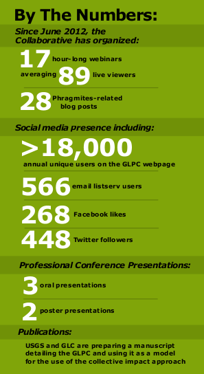
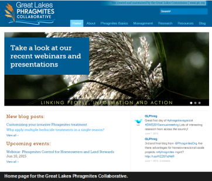
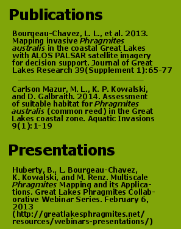
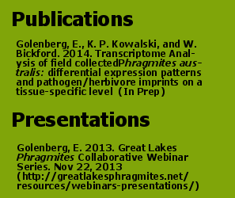
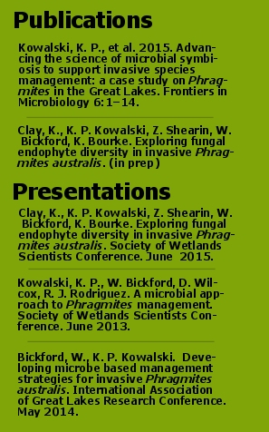
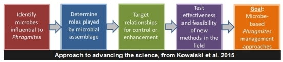
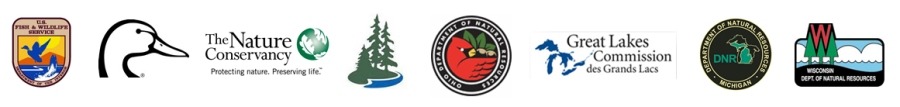

Phragmites Management Support
Prepared by Kurt Kowalski, U.S. Geological Survey
(Released July 2015) (PDF
Version)
|
Summary of Outputs and Outcomes since 2010
USGS used GLRI funding to work within an Integrated Pest Management (IPM) framework to engage partners and initiate several related projects resulting in regional collaboration and action of unprecedented levels. Many printed and digital products were produced or are in progress. We have changed the way people think about and approach the issues surrounding Phragmites in the Great Lakes Basin. Here we highlight significant accomplishments to date:
|
|
The Great Lakes Phragmites Collaborative

The Great Lakes Phragmites Collaborative (GLPC) is an initiative led by a core team supported by staff from USGS – Great Lakes Science Center and the Great Lakes Commission (GLC), with oversight and input from an international Advisory Committee. The goal of the GLPC is to form regional partnerships to promote more coordinated, efficient, and strategic approaches to Phragmites management, restoration, and research in the eight states and two Canadian provinces in the Great Lakes basin. The GLPC serves as a communication conduit via an interactive website, a webinar series, and several social media outlets that facilitate access to information, encourage technology transfer, and build connections between habitat managers, governmental agencies, and private landowners. The organization and involvement from the Advisory Committee has helped to organize many of the most recent Phragmites research and management developments including:
|
|
Basin-wide Phragmites Mapping and Vulnerability Mapping To understand the extent of the Phragmites problem in the Great Lakes coastal zone, a mapping exercise was completed using PALSAR satellite imagery to map large stands of invasive Phragmites. This effort produced the first U.S. coastal Great Lakes distribution map of Phragmites australis, which identified 24,643 ha of large (> 0.2 ha), dense stands of invasive Phragmites.
Using
the basin-scale distribution map, environmental data (e.g., soils, nutrients,
disturbance, climate, topography), and climate predictions, we performed
analyses of current and predicted suitable coastal habitat using boosted
regression trees. We also investigated differential influences of environmental
variables in the upper lakes (Lakes Superior, Michigan, and Huron) and lower
lakes (Lakes St. Clair, Erie, and Ontario). The results of this study, combined
with a publicly available online GLRI Phragmites Decision Support Tool
(DST), enable resource managers and restoration practitioners to target and
prioritize Phragmites control efforts in the Great Lakes coastal zone. |
|
Gene Silencing for Phragmites Management Researchers at Wayne State University, in cooperation with the USGS-GLSC, are exploring the use of gene silencing as a means of Phragmites management. This genetic approach is seeking a species-specific control option for managers, which could be very useful in sensitive areas or areas where conventional control efforts are not available. RNA-based gene silencing disrupts the transmission of genetic information necessary for protein synthesis and trait development. Thus, if genes integral in photosynthesis (for example) are silenced, the plant effectively will fail to produce energy for the plant. We sequenced the transcriptome (all of the RNA codes that make proteins in the plant) of Phragmites australis to create a genetic road-map that will guide future targets for knockdown of gene expression via constructed vectors. Competition experiments will be carried out between 'silenced' plants and non-silenced plants. Field trials will begin once a reduction in competitive abilities are documented. |
|
Phragmites Symbiosis Collaborative Building off the success from the Great Lakes Phragmites Collaborative, we set out to use a collective impact approach to advance the science of microbial symbiosis in Phragmites and identify management targets. Assisted by partners at the Great Lakes Commission, we put together a group with international membership consisting of 12 scientists who meet regularly to assess the state of the science and identify research gaps. In February 2015, we published a science agenda in Frontiers in Microbiology; this paper is being used as a guide for new projects in this field and will maintain the collective focus on the ultimate goal of a Phragmites management approach based on microbial symbiosis. As a direct result of assembling this group, USGS has formed new relationships with other research labs and is contributing directly to collaborative research efforts exploring the role of bacterial and fungal endophytes in invasive Phragmites. In collaboration with Indiana University, we are exploring the role of fungal endophytes in the invasion success of Phragmites to determine if and how these organisms are providing any advantage to this extremely invasive plant. We are conducting additional research with collaborators at Rutgers University, only this research is focused on bacterial endophytes within Phragmites. Both of these research projects are intended to develop the potential for microbial-based Phragmites management opportunities.
|
|
Putting it all together: Phragmites Adaptive Management Framework Facilitated by the Great Lakes Phragmites Collaborative, we are spear-heading an integrated effort to develop a regional adaptive management framework for Phragmites that is based on structured decision making principles. This effort will be fueled by stakeholder involvement and on-the-ground data collection. The new integrated approach will build on existing successful programs (e.g., Native Prairie Adaptive Management) and resources (USFWS Phragmites adaptive management plan for the refuge system) to develop a framework suitable for basin-wide implementation. The core of the framework will involve standardized scalable monitoring protocols and a centralized data management system that supports large-scale state/transition models. As managers populate the database with on-the-ground data, management guidelines will adapt to reflect the most successful techniques applied in the given system. Patch- and landscape-scale guidance will be produced to assist land managers with annual decisions regarding Phragmites management. The core USGS development team, the Great Lakes Commission, and many other partners will engage a suite of private, non-profit, and governmental partners to maximize basin-wide participation and investment by resource managers. Components of the framework will be improved with time based on user feedback and advances in technologies. 
|